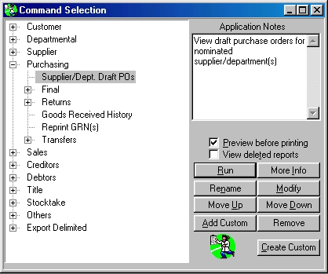

Command Window
Command Windows can be opened from the Report Writer's File menu (first selection) or by clicking on the leftmost toolbar button. The Command Window gives you access to all reports, as well as means of organising its list.
It opens by default when you open the report Writer from the Bookscan menu Reports / Reports.

The left-most pane of the window contains an entry for each report in the system (these can be system reports or ones that you have created yourself: custom reports). The right half of the window contains a number of displays and buttons. The upmost control contains Notes concerning the report. You can edit these to your liking. Beneath the Notes display there can appear a record of how long the report last took to run (not shown). Beneath that is a checkbox by which previewing can be switched on or off. The next checkbox allows deleted reports to be viewed in the list (allowing them to be undeleted). And beneath that come the push-buttons, described below:
Run - Runs the selected report.
More Info - Shows the Help on the selected report.
Rename - Allows you to rename the report.
Modify - Loads the report form into the ReportPro Designer.
Up In List - Moves the report up in the master list.
Down In List - Moves the report down in the master list.
Create - Allows you to add a new report to the master list.
Remove - Remove the report from the master list, or recall deleted reports.
Close - Closes the command window.